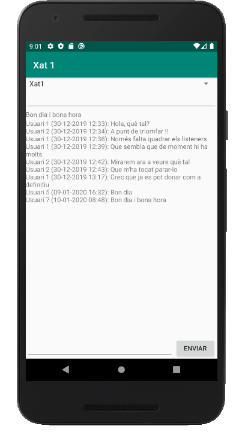

Bases de Dades
2.3.3.3 CF-Android: Tot l'exemple
Anem a posar tot l'exemple del xat complet, això sí, amb algunes modificacions i millores:
- Tindrem la classe Missatge amb les propietat nom i contingut (expressament diferents dels noms utilitzats en l'exemple anterior per poder comprovar que aquestes modificacions funcionen i milloren l'exemple). Posarem també la data (com un long) per a poder ordenar els missatges cronològicament
- Llevem les coses que no s'utilitzen estrictament en aquest exemple
- El Spinner anomenat comboXats ara ja funcionarà. Per a no modificar les coses ja fetes, posarem la creació dels listeners en un mètode anomenat inicialitzar() que per a tocar el menys possible estarà dins del listener de detectar els canvis en el Spinner, ja que ara els altres listeners dependran del xat triat. I haurem d'anar amb compte també de parar els listeners, ja creats. És a dir, si primer triem un xat, tindrem els listeners que apunten a ell. Si després triem un altre xat i creem els listeners una altra vegada per a que apunten al lloc correcte, els tindrem per duplicat. Hauríem de parar els primers listeners
JAVA
Aquest és la classe Missatge
public class Missatge{
public String nom;
public long data;
public String contingut;
public Missatge(){
}
public Missatge(String nom,String cont){
this.nom=nom;
this.contingut=cont;
}
public Missatge(String nom, long data, String contingut) {
super();
this.nom = nom;
this.data = data;
this.contingut = contingut;
}
public String getNom() {
return nom;
}
public void setNom(String nom) {
this.nom = nom;
}
public long getData() {
return data;
}
public void setData(long data) {
this.data = data;
}
public String getContingut() {
return contingut;
}
public void setContingut(String contingut) {
this.contingut = contingut;
}
}I aquest el programa:
import androidx.annotation.NonNull;
import androidx.appcompat.app.AppCompatActivity;
import android.content.Context;
import android.os.Bundle;
import android.view.View;
import android.widget.AdapterView;
import android.widget.ArrayAdapter;
import android.widget.Button;
import android.widget.EditText;
import android.widget.Spinner;
import android.widget.TextView;
import com.google.android.gms.tasks.OnCompleteListener;
import com.google.android.gms.tasks.OnSuccessListener;
import com.google.android.gms.tasks.Task;
import com.google.firebase.firestore.DocumentChange;
import com.google.firebase.firestore.DocumentReference;
import com.google.firebase.firestore.DocumentSnapshot;
import com.google.firebase.firestore.EventListener;
import com.google.firebase.firestore.FirebaseFirestore;
import com.google.firebase.firestore.FirebaseFirestoreException;
import com.google.firebase.firestore.ListenerRegistration;
import com.google.firebase.firestore.QuerySnapshot;
import java.text.SimpleDateFormat;
import java.util.ArrayList;
import java.util.Date;
import java.util.HashMap;
import java.util.Map;
import javax.annotation.Nullable;
public class MainActivity extends AppCompatActivity {
FirebaseFirestore db;
DocumentReference docRef;
ListenerRegistration listenerUltimMissatge = null;
ListenerRegistration listenerMissatges = null;
@Override
protected void onCreate(Bundle savedInstanceState) {
super.onCreate(savedInstanceState);
setContentView(R.layout.activity_main);
final Spinner comboXats = (Spinner)findViewById(R.id.comboXats);
final EditText usuari = (EditText)findViewById(R.id.usuari);
final TextView ultim = (TextView)findViewById(R.id.ultim);
final TextView area = (TextView)findViewById(R.id.area);
final EditText text = (EditText)findViewById(R.id.text);
final Button boto = (Button)findViewById(R.id.boto);
boto.setText("Enviar");
final Context pantPrincipal = this;
// Referències a la Base de Dades i als documents
db = FirebaseFirestore.getInstance();
//docRef = db.collection("Xats").document("XatProva");
// Exemple de llegir tots els documents d'una col·lecció
// Per a triar el xat
db.collection("Xats").get().addOnCompleteListener(new OnCompleteListener<QuerySnapshot>() {
@Override
public void onComplete(@NonNull Task<QuerySnapshot> task) {
if (task.isSuccessful()) {
ArrayList<String> opcions = new ArrayList<>();
for (DocumentSnapshot document : task.getResult()) {
opcions.add(document.getId());
}
ArrayAdapter<String> adaptador = new ArrayAdapter<String>(pantPrincipal,android.R.layout.simple_spinner_item, opcions);
adaptador.setDropDownViewResource(android.R.layout.simple_spinner_dropdown_item);
comboXats.setAdapter(adaptador);
}
else {
}
}
});
comboXats.setOnItemSelectedListener(new AdapterView.OnItemSelectedListener() {
@Override
public void onItemSelected(AdapterView<?> arg0, View arg1,
int arg2, long arg3) {
// TODO Auto-generated method stub
docRef=db.collection("Xats").document(comboXats.getSelectedItem().toString());
area.setText("");
inicialitzar();
}
private void inicialitzar() {
// Exemple de lectura única: AddOnSuccessListener()
// Per a posar el títol. Sobre /Xats/XatProva/nomXat
docRef.get().addOnSuccessListener(new OnSuccessListener<DocumentSnapshot>() {
@Override
public void onSuccess(DocumentSnapshot documentSnapshot) {
String nomXat = documentSnapshot.getString("nomXat");
setTitle(nomXat);
}
});
// Exemple de listener de lectura contínua addSnapshotListener() sobre un document
// Per a posar l'últim missatge registrat. Sobre /Xats/XatProva/ultimMissatge
// Si estava en marxa, el parem abans de tornar-lo a llançar
if (listenerUltimMissatge != null)
listenerUltimMissatge.remove();
listenerUltimMissatge = docRef.addSnapshotListener(new EventListener<DocumentSnapshot>() {
@Override
public void onEvent(@Nullable DocumentSnapshot documentSnapshot, @Nullable FirebaseFirestoreException e) {
ultim.setText(documentSnapshot.getString("ultimMissatge"));
}
});
// Exemple de listener de lectura contínua addSnapshotListener() sobre una col·lecció
// Per a posar tota la llista de missatges. Sobre /Xats/XatProva/missatges
// Si estava en marxa, el parem abans de tornar-lo a llançar
if (listenerMissatges != null)
listenerMissatges.remove();
listenerMissatges = db.collection("Xats").document(comboXats.getSelectedItem().toString()).collection("missatges")
.orderBy("data").addSnapshotListener(new EventListener<QuerySnapshot>() {
@Override
public void onEvent(@Nullable QuerySnapshot snapshots, @Nullable FirebaseFirestoreException e) {
for (DocumentChange dc : snapshots.getDocumentChanges()) {
switch (dc.getType()) {
case ADDED:
SimpleDateFormat sdf = new SimpleDateFormat("dd-MM-yyyy HH:mm");
String dataFormatejada = sdf.format(new Date(dc.getDocument().getLong("data")));
area.append(dc.getDocument().getString("nom") + " (" + dataFormatejada + "): "
+ dc.getDocument().getString("contingut") + "\n");
break;
}
}
}
});
// Per a guardar dades
// Primer sobre /Xats/XatProva/ultimUsuari i /Xats/XatProva/ultimMissatge
// Després també com a documents en la col·lecció /Xats/XatProva/missatges
boto.setOnClickListener(new View.OnClickListener() {
@Override
public void onClick(View view) {
Map<String, Object> dades = new HashMap<>();
dades.put("ultimUsuari", usuari.getText().toString());
dades.put("ultimMissatge", text.getText().toString());
docRef.update(dades);
Missatge m = new Missatge(usuari.getText().toString(), (new Date()).getTime(), text.getText().toString());
db.collection("Xats").document(comboXats.getSelectedItem().toString()).collection("missatges").add(m);
text.setText("");
}
});
}
@Override
public void onNothingSelected(AdapterView<?> arg0) {
// TODO Auto-generated method stub
}
});
}
}
KOTLIN
Classe Missatge
class Missatge(val nom: String, val data: Long, val contingut: String) {}I el programa:
import androidx.appcompat.app.AppCompatActivity
import android.os.Bundle
import android.view.View
import android.widget.*
import com.google.firebase.firestore.*
import java.text.SimpleDateFormat
import java.util.*
import kotlinx.android.synthetic.main.activity_main.*
class MainActivity : AppCompatActivity() {
var listenerUltimMissatge: ListenerRegistration? = null
var listenerMissatges: ListenerRegistration? = null
override fun onCreate(savedInstanceState: Bundle?) {
super.onCreate(savedInstanceState)
setContentView(R.layout.activity_main)
boto.text = "Enviar"
val pantPrincipal = this
// Referències a la Base de Dades i als documents
val db: FirebaseFirestore = FirebaseFirestore.getInstance()
var docRef: DocumentReference = db.collection("Xats").document("XatProva");
// Exemple de llegir tots els documents d'una col·lecció
// Per a triar el xat
db.collection("Xats").get().addOnCompleteListener { task ->
if (task.isSuccessful) {
val opcions = ArrayList<String>()
for (document in task.result!!) {
opcions.add(document.id)
}
val adaptador =
ArrayAdapter(pantPrincipal, android.R.layout.simple_spinner_item, opcions)
adaptador.setDropDownViewResource(android.R.layout.simple_spinner_dropdown_item)
comboXats.adapter = adaptador
} else {
}
}
comboXats.onItemSelectedListener = object:AdapterView.OnItemSelectedListener {
override fun onItemSelected(arg0:AdapterView<*>, arg1: View, arg2:Int, arg3:Long) {
// TODO Auto-generated method stub
docRef = db.collection("Xats").document(comboXats.selectedItem.toString())
area.text = ""
inicialitzar()
}
private fun inicialitzar() {
// Exemple de lectura única: AddOnSuccessListener()
// Per a posar el títol. Sobre /Xats/XatProva/nomXat
docRef.get().addOnSuccessListener { documentSnapshot ->
val nomXat = documentSnapshot.getString("nomXat")
title = nomXat
}
// Exemple de listener de lectura contínua addSnapshotListener() sobre un document
// Per a posar l'últim missatge registrat. Sobre /Xats/XatProva/ultimMissatge
// Si estava en marxa, el parem abans de tornar-lo a llançar
if (listenerUltimMissatge != null)
listenerUltimMissatge!!.remove()
listenerUltimMissatge = docRef.addSnapshotListener { documentSnapshot, e -> ultim.text = documentSnapshot!!.getString("ultimMissatge") }
// Exemple de listener de lectura contínua addSnapshotListener() sobre una col·lecció
// Per a posar tota la llista de missatges. Sobre /Xats/XatProva/missatges
// Si estava en marxa, el parem abans de tornar-lo a llançar
if (listenerMissatges != null)
listenerMissatges!!.remove()
listenerMissatges = db.collection("Xats").document(comboXats.selectedItem.toString()).collection("missatges")
.orderBy("data").addSnapshotListener { snapshots, e ->
for (dc in snapshots!!.documentChanges) {
when (dc.type) {
DocumentChange.Type.ADDED -> {
val sdf = SimpleDateFormat("dd-MM-yyyy HH:mm")
val dataFormatejada = sdf.format(Date(dc.document.getLong("data")!!))
area.append(
dc.document.getString("nom") + " (" + dataFormatejada + "): " + dc.document.getString("contingut") + "\n"
)
}
}
}
}
// Per a guardar dades
// Primer sobre /Xats/XatProva/ultimUsuari i /Xats/XatProva/ultimMissatge
// Després també com a documents en la col·lecció /Xats/XatProva/missatges
boto.setOnClickListener {
val dades = HashMap<String, Any>()
dades["ultimUsuari"] = usuari.text.toString()
dades["ultimMissatge"] = text.text.toString()
docRef.update(dades)
val m = Missatge(usuari.text.toString(), (Date()).time, text.text.toString())
db.collection("Xats").document(comboXats.selectedItem.toString()).collection("missatges").add(m)
text.setText("")
}
}
override fun onNothingSelected(arg0:AdapterView<*>) {
// TODO Auto-generated method stub
}
}
}
}
I el resultat tant en un cas com en l'altre és el de la imatge, en la qual es veu el contingut del xat Xat1.
